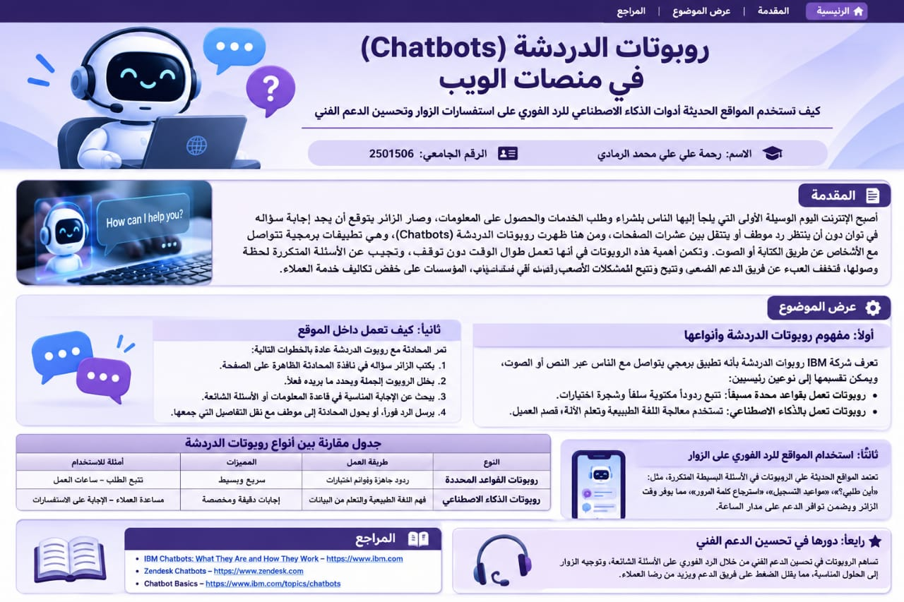

المقدمة

أصبح الإنترنت اليوم الوسيلة الأولى التي يلجأ إليها الناس للشراء وطلب الخدمات والحصول على المعلومات، وصار الزائر يتوقع أن يجد إجابة سؤاله في ثوانٍ دون أن ينتظر رد موظف أو يتنقل بين عشرات الصفحات. ومن هنا ظهرت روبوتات الدردشة (Chatbots)، وهي تطبيقات برمجية تتواصل مع الأشخاص عن طريق الكتابة أو الصوت [1].
وتكمن أهمية هذه الروبوتات في أنها تعمل طوال الوقت دون توقف [5]، وتجيب عن الأسئلة المتكررة لحظة وصولها، فتخفف العبء عن فريق الدعم الفني وتتيح له التفرغ للمشكلات الأصعب، كما تساعد المؤسسات على خفض تكاليف خدمة العملاء [4]. ويتناول هذا التقرير مفهوم روبوتات الدردشة وأنواعها، وطريقة عملها، وكيف تستخدمها المواقع للرد الفوري على الزوار، ودورها في تحسين الدعم الفني، ثم أهم التحديات التي تواجهها.
عرض الموضوع
أولًا: مفهوم روبوتات الدردشة وأنواعها
تعرّف شركة IBM روبوت الدردشة بأنه تطبيق برمجي يتواصل مع الناس عبر النص أو الصوت، وتوضح أن هذه الروبوتات كانت موجودة قبل ظهور الذكاء الاصطناعي التوليدي، فليس كل روبوت دردشة يعمل بالذكاء الاصطناعي [1]. ويمكن تقسيمها إلى نوعين رئيسيين:
- روبوتات تعمل بقواعد محددة مسبقًا: تتبع ردودًا مكتوبة سلفًا وشجرة اختيارات، وغالبًا تعرض على الزائر أزرارًا يختار منها دون كتابة، مثل «تتبع الطلب» أو «ساعات العمل» [1][5].
- روبوتات تعمل بالذكاء الاصطناعي: تستخدم معالجة اللغة الطبيعية وتعلّم الآلة لفهم قصد العميل من سؤاله، وتحسّن أداءها مع الوقت [6].
ويخلط كثيرون بين روبوت الدردشة ومصطلحات قريبة منه. فالذكاء الاصطناعي المحادثي (Conversational AI) فئة أوسع من التقنيات التي تمكّن الأنظمة من فهم اللغة البشرية والرد عليها، أما روبوت الدردشة فهو أحد تطبيقاتها. ويُستخدم مصطلح «الوكيل الافتراضي» (Virtual Agent) أحيانًا بنفس المعنى، وأحيانًا أخرى لوصف أنظمة أكثر تقدمًا تصل إلى تطبيقات العمل وتنفذ مهام أكثر تعقيدًا [1].
ثانيًا: كيف تعمل داخل الموقع
تمر المحادثة مع روبوت الدردشة عادةً بالخطوات التالية:
- يكتب الزائر سؤاله في نافذة المحادثة الظاهرة على الصفحة.
- يحلل الروبوت الجملة ويحدد ما يريده الزائر فعلًا.
- يبحث عن الإجابة المناسبة في قاعدة المعلومات أو قائمة الأسئلة الشائعة الخاصة بالموقع.
- يرسل الرد فورًا، وإذا لم يجد حلًا يحوّل المحادثة إلى موظف مع نقل التفاصيل التي جمعها [5][6].
وتوفر الشركات التقنية منصات جاهزة لبناء هذه الروبوتات، مثل خدمات IBM Watson التي تساعد على إنشاء روبوت يفهم اللغة الطبيعية ويمكن إضافته إلى الموقع أو التطبيق أو صفحات التواصل الاجتماعي [7].
ثالثًا: استخدام المواقع للرد الفوري على الزوار
تعتمد المواقع الحديثة على الروبوتات في الأسئلة البسيطة المتكررة. فقد ذكر المدير التقني لشركة Zendesk في منطقة أوروبا والشرق الأوسط وأفريقيا أن الروبوتات حل مناسب لأسئلة مثل «أين فاتورتي؟» [4]، كما تذكر IBM أمثلة مثل مساعدة العميل على استبدال منتج أو الإجابة عن أسئلة تخص مزايا الموظفين [1].
ومن الأمثلة التوضيحية المبسطة على ذلك:
- متجر إلكتروني: يسأل الزائر «أين طلبي؟» فيعرض الروبوت حالة الشحن فورًا.
- موقع جامعة: يسأل الطالب عن مواعيد التسجيل فيحصل على الإجابة من صفحة الأسئلة الشائعة.
- موقع خدمي: ينسى المستخدم كلمة المرور فيرشده الروبوت إلى خطوات استرجاعها.
وأهم ما يميز هذه الروبوتات هو التوافر؛ فهي جاهزة في كل ساعة وكل يوم، ولا تحتاج إلى استراحة أو إجازة، وتتعامل مع عدد كبير من المحادثات في وقت واحد [5].
رابعًا: دورها في تحسين الدعم الفني
تساهم الروبوتات في تحسين الدعم الفني من أكثر من جانب. فمن ناحية التكلفة، ذكرت Zendesk أن بعض عملائها حققوا وفرًا يصل إلى 30% عند أتمتة الاستفسارات البسيطة، مع ارتفاع في درجات رضا العملاء [4]. ومن ناحية العمل، يتفرغ الموظفون للمشكلات الجديدة والمعقدة التي تحتاج إلى تحليل وإلى فهم لمشاعر العميل، بينما يتولى الروبوت المشكلات المتكررة [5]. وتصف Zendesk دور الذكاء الاصطناعي أيضًا بأنه مساعد للموظف (agent co-pilot) وليس بديلًا عنه [4].
ويمكن توضيح الفرق بين الطرفين بالمقارنة التالية: الروبوت أسرع في الرد لأن إجاباته جاهزة، ويتفوق في التعامل مع المشكلات المعروفة، لكنه يلتزم بنص محدد وقد يفوته الانتباه إلى نبرة العميل أو درجة انزعاجه. أما الموظف فيستطيع تشخيص مشكلة جديدة والتعاطف مع العميل، لكنه يعمل في ساعات محددة ولا يستطيع إدارة عدد كبير من المحادثات بنفس السرعة [5]. ولهذا تُعد الخدمة الأفضل هي التي تجمع نقاط قوة الطرفين.
| الجانب | روبوت الدردشة | الموظف البشري |
|---|---|---|
| سرعة الرد | سريعة جدًا ومتاحة على مدار الساعة | تتأثر بساعات العمل وحجم الطلبات |
| الأسئلة المتكررة | مناسب جدًا للأسئلة المعروفة | يمكنه التعامل معها، لكن ذلك يستهلك وقتًا |
| المشكلات المعقدة | قد يواجه صعوبة في الحالات الجديدة | أقدر على التحليل والتشخيص والتعامل مع الاستثناءات |
| التعاطف وفهم المشاعر | محدود | أكثر قدرة على فهم الموقف والاستجابة الإنسانية |
خامسًا: خطوات لنجاح تطبيق الروبوت في الموقع
يقترح الخبراء عدة ممارسات تجعل الروبوت مفيدًا فعلًا للزائر وليس عائقًا أمامه، منها [5]:
- تجهيز محادثات للأسئلة الأكثر تكرارًا على كل قنوات التواصل، حتى يجيب الروبوت عنها في أي وقت.
- التأكد من قدرة الروبوت على تحويل المحادثة إلى موظف مع نقل كل التفاصيل التي جمعها، حتى لا يضطر الزائر إلى تكرار شكواه.
- تدريب الموظفين على التعامل مع الحالات المعقدة والمواقف العاطفية التي لا يحسنها الروبوت.
- تحديث الإجابات المتاحة للروبوت باستمرار بحيث تبقى سريعة ومناسبة لأكثر المشكلات أهمية.
وتشير Gartner إلى أن على مسؤولي خدمة العملاء توجيه الزوار إلى الروبوت عندما تناسب مشكلتهم ذلك، وإلى قنوات أخرى عندما تكون أنسب [2]. كما أن وضوح ما يستطيع الروبوت فعله وما لا يستطيع يقلل من إحباط المستخدمين.
سادسًا: التحديات
رغم هذه الفوائد، لا تخلو التجربة من مشكلات. ففي استطلاع أجرته Forrester لصالح شركة Cyara على أكثر من 1500 مستهلك، قال ثلاثة أرباع المشاركين إن روبوتات خدمة العملاء لا تستطيع التعامل مع الأسئلة المعقدة [3]. كما أظهر استطلاع لشركة Gartner شمل 497 عميلًا أن 8% فقط منهم استخدموا روبوت دردشة في آخر تجربة خدمة مروا بها، وأن الروبوتات لا تناسب كل أنواع المشكلات، ولذلك ينبغي توجيه العميل إليها عندما تناسب مشكلته فقط [2].
ومن الصعوبات الأخرى الحاجة إلى صيانة وتحديث مستمرين، وضعف التعامل مع الاستفسارات الحساسة أمنيًا ومع المواقف العاطفية [6]، فمعرفة الروبوت محدودة بما سبق حله أو إدخاله إليه [5].
ومع ذلك تتوقع Gartner أن تصبح روبوتات الدردشة القناة الرئيسية لخدمة العملاء لدى نحو ربع المؤسسات بحلول عام 2027 [3]. ويتضح من ذلك أن نجاح الروبوت يعتمد على استخدامه في المكان المناسب، مع وجود طريق سهل لتحويل الزائر إلى موظف بشري عند الحاجة.
سابعًا: مستقبل روبوتات الدردشة في المواقع
تتجه روبوتات الدردشة إلى مزيد من التطور مع تقدم الذكاء الاصطناعي التوليدي، لكن Gartner تنبه إلى أن هذا التطور قد يزيد حيرة العملاء بشأن ما تستطيع الروبوتات فعله وما لا تستطيع [2].
وتوضح IBM أن بعض وكلاء الذكاء الاصطناعي (AI Agents) يتضمن واجهة محادثة، لكن المحادثة ليست إلا جزءًا من وظيفته، وأن بعض الأنظمة المتقدمة تتصل بتطبيقات العمل وتنفذ مهام فعلية بدل الاكتفاء بالرد على الأسئلة [1].
وفي مجال الدعم الفني تتوقع Zendesk أن يعمل الذكاء الاصطناعي كمساعد للموظف، وأن يراجع جودة كل المحادثات تلقائيًا ويحيل إلى المراجعة البشرية الحالات التي تحتاج ذلك فقط [4]. ومع هذا التطور يبقى دور الموظف البشري مهمًا في الحالات الجديدة والمعقدة والمواقف التي تحتاج إلى تعاطف [5].
ملخص سريع
⚡ سرعة الاستجابة
تساعد Chatbots في الإجابة عن الأسئلة المتكررة بسرعة وفي أي وقت.
🤖 أتمتة الخدمة
تقلل الأعمال المتكررة وتتيح لموظفي الدعم التركيز على المشكلات الأكثر تعقيدًا.
👨💻 التعاون مع الإنسان
أفضل استخدام للروبوت يكون مع وجود مسار واضح لتحويل الحالات التي تحتاج إلى موظف بشري.
المراجع
-
[1] IBM. (2026). What is a chatbot? IBM Think.
https://ibm.com/topics/chatbots -
[2] CX Today. (n.d.). Gartner: Just 8 percent of consumers used a chatbot during their latest service experience.
رابط المصدر -
[3] TechCrunch. (n.d.). Consumers find chatbots disappointing, but that won’t harm adoption.
رابط المصدر -
[4] Technology Magazine. (n.d.). Zendesk: How AI chatbots can transform customer service.
رابط المصدر -
[5] Selby, P. (2019, July 10). Combine humans and bots for a winning customer service experience. CustomerThink.
رابط المصدر -
[6] Mava. (n.d.). AI chatbots for customer service: Pros, cons & best practices.
رابط المصدر -
[7] Cubet. (2023, June 19). IBM Watson chatbot.
رابط المصدر